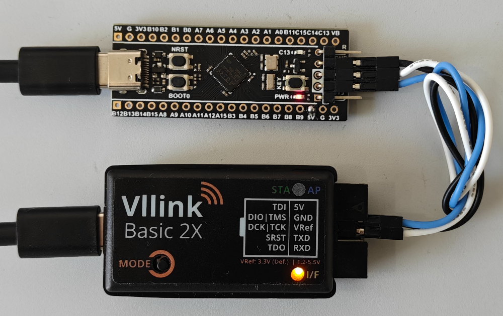
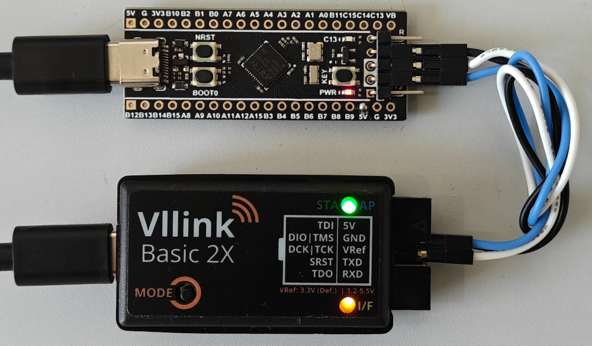
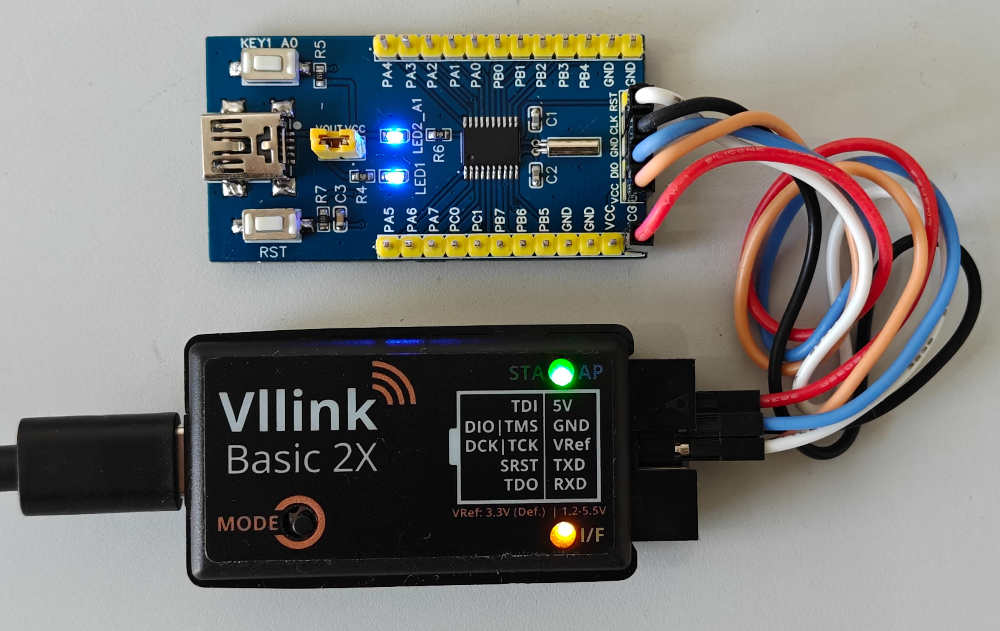
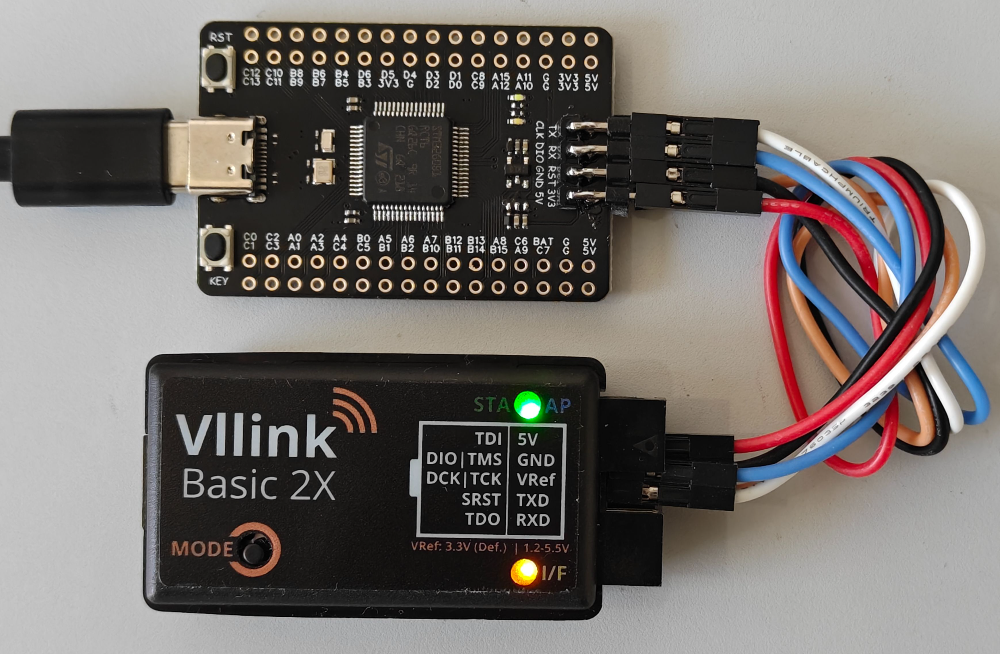

Vllink 2X 快速上手
一、对比
Vllink 2X固件与Vllink Basic2通用Vllink 2X硬件部分做了如下优化：硬件对比
Vllink 2X
Vllink Basic 2
外壳
塑料外壳+PVC标签
热缩管
独立蓝牙天线
无
预留
2.4G Wifi天线
支持2.4G信道
无
5.8G Ipex4外置天线接口
支持，可手工切换
无
红色LED灯
无
有
USB电源输入单向二极管 (1N5817W)
有
无
DC3 5V输入理想二极管 (CH213K)
有
无
DC3 5V输出功率电子开关 (SY6280)
有，软件控制
无
DC3 5V脚TVS (SMF5.0A)
有
无
二、调试接口定义
接口（定位见PVC标签） |
介绍 |
|---|---|
TDI |
JTAG数据口3 |
DIO / TMS |
JTAG模式口、SWD数据口3 |
DCK / TCK |
JTAG时钟口、SWD时钟口3 |
SRST |
芯片复位口3 |
TDO |
JTAG数据口3 |
5V |
双向5V电源口1 |
GND |
共地口 |
VRef |
参考电平及简易可调电压源2 |
TXD |
串口输出3 |
RXD |
串口输入3 |
[1] 5V脚支持供电双向切换，默认经理想二极管（CH213K）单向输入，支持软件开启5V输出。详见 Vllink 2X 电源部分详细说明
[2] VRef默认输出3.3V，可配置为输入模式或输出其他电压。详见 Vllink 2X 电源部分详细说明
[3] 数据口的通讯电平由VRef决定。详见 Vllink 2X 电源部分详细说明
* 由于VRef默认输出3.3V，所以对于常见3.3V芯片，可以仅连接必要数据接口及GND
* 对于超过VRef电平的芯片，可将VRev接上芯片IO电平
* 对于低于VRef电平的芯片，必须调低VRef电平或者关闭VRef输出
三、模式介绍及切换
3.1 升级模式
按住按键接电脑，进入升级模式。详见 Vllink Basic2 固件更新
升级模式下，单击按键，退出升级模式
3.2 运行模式切换
正常上电后，通过双击按键切换运行模式
运行模式有三种，分别是有线模式、无线接入点模式（AP）以及无线设备模式（STA）
3.3 重置及重新配对
正常上电后，长按按键10秒至灯光熄灭，松开后即重置所有配置，但
VOut以及Vref_Voltage_mV除外，避免误改动输出电压重置后，将两个硬件分别切换到
AP与STA模式，即可进行重新配对AP不存储配对信息，重新配对仅需对
STA重置
3.4 有线模式
正常上电后，所有LED闪烁一次
有线模式下，DC3接口强制选定
DC3接口被选定时，板上黄灯作为
VRef脚电平指示：常亮表示存在电压；闪烁表示无电压USB设备启用，可与计算机通信
3.5 无线接入点模式（AP）
正常上电后，所有LED闪烁两次
AP的DC3接口在无STA接入时会被选定，选定时可用DC3接口被选定时，板上黄灯作为
VRef脚电平指示：常亮表示存在电压；闪烁表示无电压板上蓝灯作为无线连接指示灯，未连接时闪烁、已连接后常亮
USB设备启用，可与计算机通信
3.6 无线设备模式（STA）
正常上电后，所有LED闪烁三次
STA的DC3接口仅在无线接入且被选定后可用DC3接口被选定时，板上黄灯作为
VRef脚电平指示：常亮表示存在电压；闪烁表示无电压板上绿灯作为无线连接指示灯，未连接时闪烁、已连接后常亮
USB设备关闭，不可与计算机通信
四、示例
4.1 有线模式：常见3.3V单片机

调试器接电脑，目标板独立供电
目标板带有LDO，电平3.3V，调试器
VRef默认配置Vref_Voltage_mV=3300，故只需接3根线：GND、DIO及CLK如需CDC-UART功能，需额外连接图中
TXD，RXD
4.2 无线模式：直连，STA独立供电

AP在远端接电脑，图中未展示STA与目标板皆独立供电目标板带有LDO，电平3.3V，调试器
VRef默认配置Vref_Voltage_mV=3300，故只需接3根线：GND、DIO及CLK如需CDC-UART功能，需额外连接图中
TXD，RXD，下同，不再赘述
4.3 无线模式：直连，STA给目标板提供5V，目标板给调试器提供参考电压

AP在远端接电脑，图中未展示STA通过USB获得供电目标板芯片为
PY32F002B，支持5V电压调试器的5V脚连接目标板的VCC，配置中启用对外供电
Vout=enable配置中的
VRef无需调整，可以将目标板的VCC再接到调试器的VRef脚上，给调试器提供5V参考电平故需接5根线：
GND、5V、VRef、DIO及CLK
4.4 无线模式：直连，目标板给调试器提供5V，调试器给目标板芯片提供1.8V

AP在远端接电脑，图中未展示目标板通过USB获得5V，目标板上的LDO已被移除，目标板芯片为
STM32G0B1，支持1.8V电压调试器的5V脚连接目标板的5V
调试器
VRef配置为Vref_Voltage_mV=1800，对外输出1.8V调试器的
VRef脚连接目标板的VCC，给目标板芯片提供1.8V故需接5根线：
GND、5V、VRef、DIO及CLK
4.5 无线模式：局域网、广域网
TODO
4.6 无线模式：一对多
TODO
4.7 无线模式：TCP-DAP
TODO
4.8 无线模式：TCP-UART
TODO
4.9 无线模式：无线串口桥
TODO
五、常见问题
问：目标板只有3.3V，使用3.3V给
STA的5V脚供电，使用过程中发现不稳定容易断线的情况
答：调试器无线基于Wifi+PA实现，无线工作时平均电流不大，但瞬时峰值电流在3.3V供电时可达500mA，请合理优化供电机制。若无优化经验，请使用USB独立供电
问：用了目标板上的
5V脚，使用过程中发现不稳定容易断线的情况
答：如果您的目标板非自行设计，请评审目标板的原理图，如果在5V输出线路上发现限流器件，如自恢复保险丝，也可能出现掉电。若无优化经验，请使用USB独立供电